| Graph
|
Directed graph (digraph)
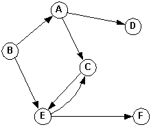 |
Weighted graph
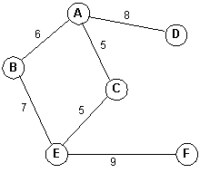 |
|---|
Graphs
Introduction
Some Notation
Graph 
Directed graph (digraph) 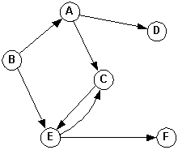Weighted graph 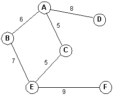
G = (V, E)
e = {v1, v2}
and v1 is the origin (source) and v2 is the terminus (destination).e = (v1, v2)
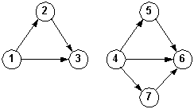
Strongly connected Weakly connected 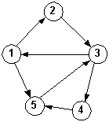 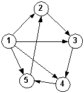
Self-check:
Representing Graphs
Trees vs. Graphs
A B C 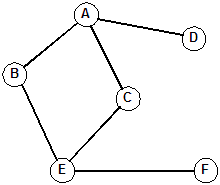 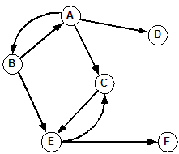 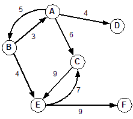
| Graph A | Graph B | Graph C | |||||||||||||||||||||||||||||||||||||||||||||||||||||||||||||||||||||||||||||||||||||||||||||||||||||||||||||||||||||||||||||||||||||||||||||||||||||
|---|---|---|---|---|---|---|---|---|---|---|---|---|---|---|---|---|---|---|---|---|---|---|---|---|---|---|---|---|---|---|---|---|---|---|---|---|---|---|---|---|---|---|---|---|---|---|---|---|---|---|---|---|---|---|---|---|---|---|---|---|---|---|---|---|---|---|---|---|---|---|---|---|---|---|---|---|---|---|---|---|---|---|---|---|---|---|---|---|---|---|---|---|---|---|---|---|---|---|---|---|---|---|---|---|---|---|---|---|---|---|---|---|---|---|---|---|---|---|---|---|---|---|---|---|---|---|---|---|---|---|---|---|---|---|---|---|---|---|---|---|---|---|---|---|---|---|---|---|---|---|---|
|
|
|
Note that for the weighted directed graph above we are using an integer matrix. (Could use other types depending on the weights.)
| Unweighted digraph | Adjacency list | |
|---|---|---|
| 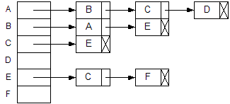 |
Self-check
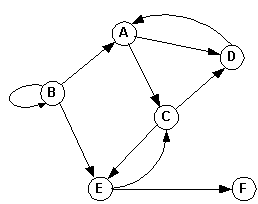
Graph Traversals
Traversing a graph is a form of searching.
An algorithm for traversing a graph (assumes that vertices have a boolean visited field):
GraphSearch (G is the graph to search, v is the starting vertex)
Put v into container C.
While container C is not empty
Remove a vertex, x, from container C
If x has not been visited
Visit x
Set x.visited to TRUE
For each vertex, w, adjacent to x
If w has not been visited
Put w into container C
End If
End For
End If
End While
End GraphSearch
Given this graph, determine the sequence of nodes that are visited from different starting nodes.
Example 1: Starting at A
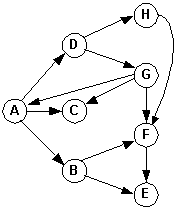 Adjacency matrix: A B C D E F G H A 0 1 1 1 0 0 0 0 B 0 0 0 0 1 1 0 0 C 0 0 0 0 0 0 0 0 D 0 0 0 0 0 0 1 1 E 0 0 0 0 0 0 0 0 F 0 0 0 0 1 0 0 0 G 1 0 1 0 0 1 0 0 H 0 0 0 0 0 1 0 0
A weighted graph:
Example 3: Starting at A and sorting the adjacency set (maybe with a priority queue):
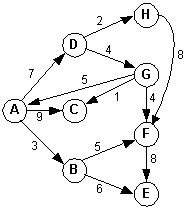 Adjacency matrix: A B C D E F G H A 0 3 9 7 0 0 0 0 B 0 0 0 0 6 5 0 0 C 0 0 0 0 0 0 0 0 D 0 0 0 0 0 0 4 2 E 0 0 0 0 0 0 0 0 F 0 0 0 0 8 0 0 0 G 5 0 1 0 0 4 0 0 H 0 0 0 0 0 8 0 0
For each vertex, v, in graph, G GraphSearch (G, v) End For
A Simple Implementation
The graph representation:
|
Visit operation and search algorithm:
void Visit(Vertex &v)
{
cout << v.label << " ";
}
void GraphSearchStack1(Vertex *v, Vertex Vertices[])
{
stack<Vertex *> C;
C.push(v); // Put v into container C.
while (!C.empty()) // While (container C is not empty)
{
Vertex *x = C.top(); // Remove a vertex, x, from container C
C.pop();
if (!x->visited) // If (x has not been visited)
{
Visit(*x); // Visit x
x->visited = true; // Set x.visited to TRUE
for (int i = 0; i < SIZE; i++) // For each vertex, w,
{
if ((x->neighbors[i]) && // (adjacent to x) and
(!Vertices[i].visited)) // (has not been visited)
C.push(&Vertices[i]); // Put w into container C
}
}
}
}
void main()
{
GraphSearchStack1(&Vertices[0], Vertices);
}
Using a queue instead of a stack:for (int i = SIZE - 1; i >= 0; i--)
void GraphSearchQueue1(Graph G, Vertex *v, Vertex *vertices)
{
int size = sizeof(G[0]);
queue<Vertex *> C; // uses a queue
C.push(v);
while (!C.empty())
{
Vertex *x = C.front(); // front() instead of top()
C.pop();
if (!x->visited)
{
Visit(*x);
x->visited = true;
for (int i = 0; i < size; i++)
{
if ((x->neighbors[i]) &&
(!vertices[i].visited))
C.push(&vertices[i]);
}
}
}
}Self-check
Spanning Trees
Suppose we have an undirected graph with many edges connecting the vertices. In other words, there are many paths from a given vertice to any other vertice. Also suppose that we just want the set of edges that connects all of the vertices in the cheapest way.Given a connected, undirected graph G = (V, E), a tree that uses the edges, E, from G, and contains all of the vertices, V, is called a spanning tree for G.
There are two well-known algorithms for finding minimum spanning trees from a graph: Prim's algorithm and Kruskal's algorithm.
Examples:
| Original graph | Embedded tree | Tree |
|---|---|---|
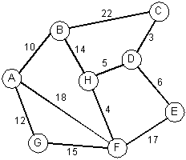 |
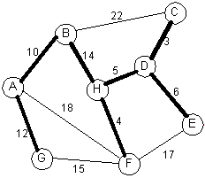 |
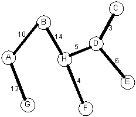 |
Prim's algorithm using a tree:
Starting at node A, the nodes will be added to the tree in this order:
A B G H F D C EStarting at node H, the nodes will be added to the tree in this order:
H F D C E B A G
The implementation is left as an exercise for the student.
Kruskal's algorithm using a forest:
|
Priority queueEdge Weight ---- ------ C-D 3 H-F 4 H-D 5 D-E 6 A-B 10 A-G 12 B-H 14 G-F 15 F-E 17 A-F 18 B-C 22 |
The edges will be added in this order:
Changing a few weights: A-B(10 to 13), G-F(15 to 7) , D-E(6 to 20)C-D H-F H-D D-E A-B A-G B-H
| New graph | Priority queue | Graph with cycle | Embedded tree | |
|---|---|---|---|---|
| 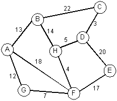 |
Edge Weight ---- ------ C-D 3 H-F 4 H-D 5 G-F 7 A-G 12 A-B 13 B-H 14 F-E 17 A-F 18 D-E 20 B-C 22 |
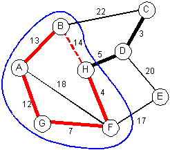 | 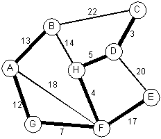 |
The embedded tree:
Tree alone Another view Another view 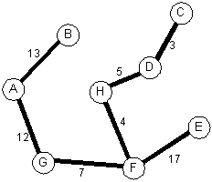 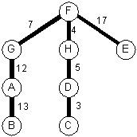 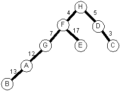
There is something that could make the implementation (as described above) of Kruskal's algorithm inefficient. (Union-Find algorithms).
The implementation is left as an exercise for the student.
More Spanning tree infoA Shortest Path Algorithm
Example graph and adjacency matrix:
| Graph | Adjacency matrix | Paths | ||||||||||||||||||||||||||||||||||||||||||||||||||
|---|---|---|---|---|---|---|---|---|---|---|---|---|---|---|---|---|---|---|---|---|---|---|---|---|---|---|---|---|---|---|---|---|---|---|---|---|---|---|---|---|---|---|---|---|---|---|---|---|---|---|---|---|
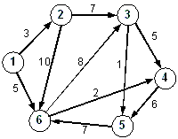 |
|
Nodes Cost
------------------
1 2 3 4 5 21
1 2 3 5 11
1 2 6 3 5 22
1 2 6 3 4 5 32
1 2 6 4 5 21
1 6 3 5 14
1 6 3 4 5 24
1 6 4 5 13
|
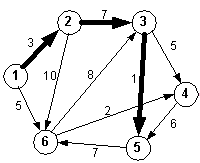
Dijkstra's Algorithm
Given a source node, we can find the shortest distance to every other node in a graph.
Pseudocode for Dijkstra's algorithm:
Undirected Weighted Graph Paths and Costs From A
Choose a node to be the source or starting point.
Initialize source to 0 cost and mark as evaluated.
Initialize all nodes to infinite cost from the source.
For each node, y, adjacent to source
1. Relax the node. That is, set y's cost to the cost of all edges from source to y.
2. Place y into a priority queue based on its total cost. (Lower is better)
3. Add source node as predecessor of y.
End For
While there are nodes in the graph that haven't been evaluated
Remove a node, x, from the PQ (lowest total cost)
If the node has already been evaluated
Discard the node
Go to top of while
Else
Mark x as evaluated.
For each neighbor, y, of x
Relax y
If new cost to reach y is less
Update list of nodes (path) to y from source.
Place y in the PQ.
End If
End For
End If
End While

{kind=link}